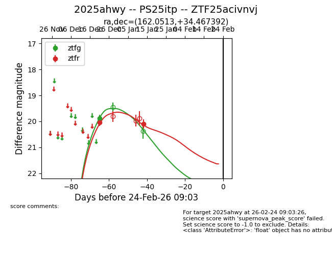
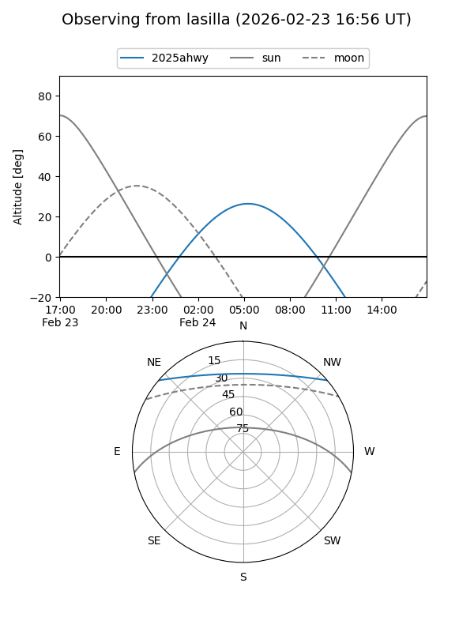
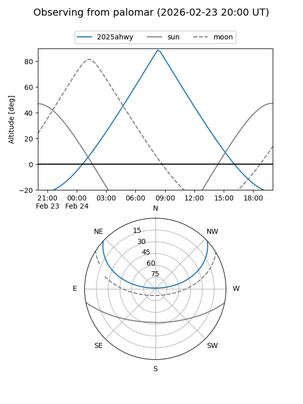
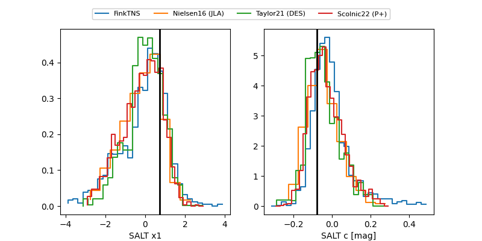

2025ahwy
Target 2025ahwy at 2026-01-09 12:49
Aliases and brokers:
FINK: link
Lasair: link
ALeRCE: link
TNS: link
YSE: link
alt names
ZTF25acivnvj (ztf,fink_ztf)
2025ahwy (tns,yse)
PS25itp (panstarrs)
Coordinates:
equatorial (ra, dec) = 162.0513,+34.46739
equatorial (HMS+DMS) = 10:48:12.31,+34:28:02.61
galactic (l, b) = (189.7533,+62.65610)
Flags:
Photometry:
last ztfg=19.89, ztfr=20.04
1 ztfg, 1 ztfr detections
Lightcurve

Visibility


Additional plots
